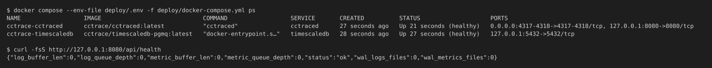
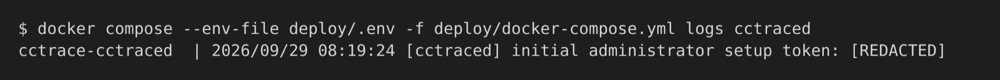
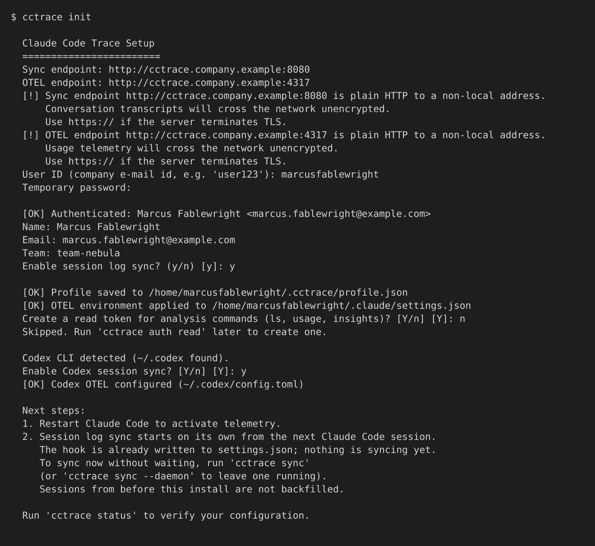
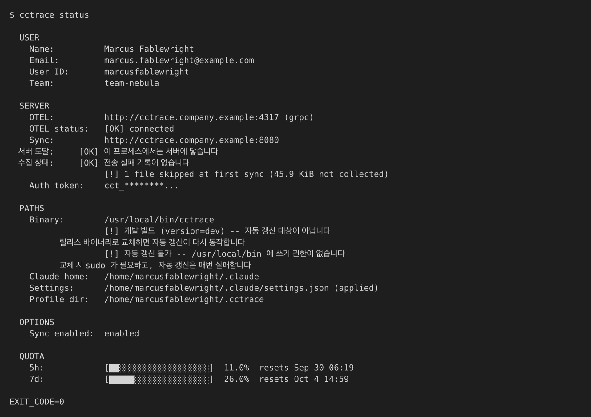
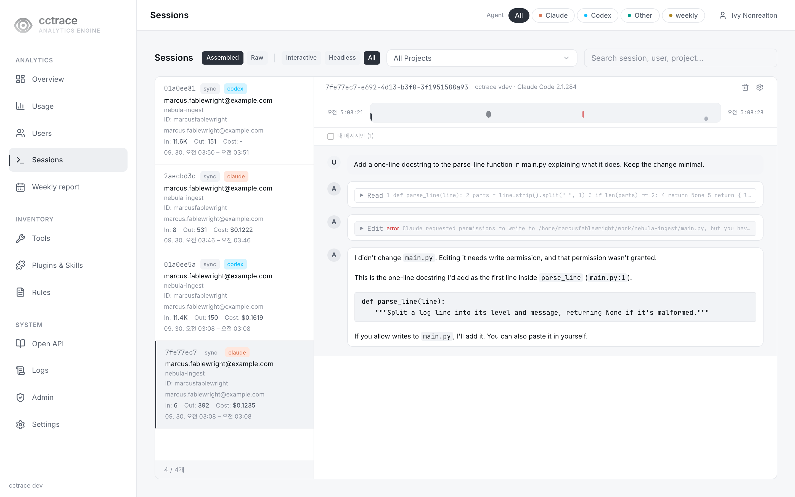

시작하기¶
서버를 띄우고 머신 한 대를 연결하는 전체 과정. 아래는 서버 스택과 Claude Code를 같은 머신 한 대에서 실행하는 경우라 모든 주소가 루프백(127.0.0.1).
각 단계는 최단 경로만 담는다. 전체 옵션과 그 이유는 연결된 페이지 참조.
1. 요구 사항 확인¶
- Go 1.25 이상 — 클라이언트 빌드용
- Docker와 Compose — 서버·데이터베이스 빌드와 실행용
- 이 저장소의 클론. 아래 명령은 모두 저장소 루트에서 실행
서버 이미지가 Docker 안에서 대시보드를 빌드하므로 이 경로에서는 호스트에 Node.js 불필요.
2. 서버 이미지 빌드¶
두 이미지 태그 모두 로컬 전용. compose는 pull_policy: never라 이미지가 없으면 pull 대신 실패.
docker build -t cctrace/timescaledb-pgmq:latest docker/timescaledb-pgmq/
docker build -f deploy/Dockerfile --build-arg UPDATE_SIGNING=optional \
-t cctrace/cctraced:latest .
UPDATE_SIGNING=optional은 업데이트 서명 키 없이 빌드하는 설정. 자세한 내용은 서버 설치.
3. 필수 값 설정¶
예제 env 파일을 복사한 뒤 3개 키만 고친다. JWT_SECRET와 LOGS_DIR는 기본값이 없어 없으면 스택이 시작되지 않고, DB_PASSWORD는 그대로 두면 안 되는 자리 표시 값으로 채워져 있다.
$ cp deploy/.env.example deploy/.env
$ jwt_secret=$(openssl rand -hex 32) && sed -i.bak "s|^JWT_SECRET=.*|JWT_SECRET=${jwt_secret}|" deploy/.env
$ db_password=$(openssl rand -hex 20) && sed -i.bak "s|^DB_PASSWORD=.*|DB_PASSWORD=${db_password}|" deploy/.env
$ LOGS_DIR=/absolute/path/on/the/host/for/logs && mkdir -p "$LOGS_DIR" && sed -i.bak "s|^LOGS_DIR=.*|LOGS_DIR=${LOGS_DIR}|" deploy/.env
$ rm deploy/.env.bak
첫 기동 전에 DB_PASSWORD 확정
Postgres는 데이터 볼륨을 초기화할 때만 비밀번호를 적용한다. 나중에 바꾸면 역할의 비밀번호는 이전 값으로 남고 cctraced가 password authentication failed로 재시작을 반복한다. 복구하려면 데이터베이스 볼륨을 지워야 한다. 이때 수집한 데이터도 함께 사라진다.
나머지 값은 deploy/.env.example에 전부 있음. 대시보드는 기본적으로 127.0.0.1:8080에 바인딩되지만 OTLP는 4317·4318 포트로 모든 호스트 인터페이스에 TLS 없이 바인딩됨. 통제하지 않는 네트워크에 호스트를 노출하기 전에 설정 확인.
4. 스택 기동¶
$ docker compose --env-file deploy/.env -f deploy/docker-compose.yml up -d
$ docker compose --env-file deploy/.env -f deploy/docker-compose.yml ps
$ curl -fsS http://127.0.0.1:8080/api/health

잘못된 값은 up -d 시점에는 드러나지 않고 서버 시작 시점에 실패. cctraced가 Up이 아니라 재시작 중이면 로그 확인:
$ docker compose --env-file deploy/.env -f deploy/docker-compose.yml logs cctraced
5. 첫 관리자 생성¶
-
같은 로그에서
[cctraced] initial administrator setup token:줄의 설정 토큰 확인. 토큰을 직접 정하려면 첫 기동 전에.env파일에CCTRACE_SETUP_TOKEN지정
-
http://127.0.0.1:8080접속. 사용자가 없으면 대시보드가/setup으로 이동 - 설정 토큰, 이메일, 이름, 8자 이상의 비밀번호 입력
첫 관리자가 생기면 토큰은 무효. 자세한 내용은 첫 관리자.
6. 클라이언트용 사용자 생성¶
cctrace init은 이메일이 아니라 cctrace User ID로 로그인하고 팀이 없는 계정은 거부한다. 첫 관리자는 둘 다 없다. 관리자로 연결하려면 Users > Management에서 그 행의 메뉴 → Edit으로 Team과 cctrace User ID를 채운다. 다른 사람으로 연결하려면 계정을 따로 만든다.
- Users > Management(
/users)에서 Add User 선택 -
다른 이메일, 이름, Team, cctrace User ID(예:
alice) 입력. 역할은user유지
-
대화상자에 표시되는 임시 비밀번호 복사
-
로그아웃 후 새 계정과 임시 비밀번호로 로그인, 이동되는 Settings 페이지에서 새 비밀번호 설정

임시 비밀번호를 바꾸기 전에는 cctrace init이 거부. 자세한 내용은 사용자.
7. 클라이언트 빌드와 설치¶
$ make build-client
$ sudo cp dist/cctrace /usr/local/bin/cctrace
make build-client는 현재 플랫폼용 바이너리를 dist 디렉터리에 빌드. 복사를 건너뛰면 cctrace가 PATH에 없을 때 cctrace init이 /usr/local/bin(macOS·Linux)으로 설치를 제안.
빌드에는 Go가 필요하다. 서버에 네트워크로 닿는 머신이라면 Go 툴체인 없이 서버에서 맞는 바이너리를 내려받아도 된다. 클라이언트 설치 참고.
8. 클라이언트 연결¶
$ cctrace init
프롬프트별 입력값:
| 프롬프트 | 이 구성에서의 값 |
|---|---|
| Sync endpoint | http://127.0.0.1:8080 |
| OTEL endpoint | http://127.0.0.1:4317 |
| User ID | 6단계에서 지정한 cctrace User ID |
| Temporary password | 6단계에서 설정한 새 비밀번호 |
| Enable session log sync? | y |

init은 프로필을 ~/.cctrace/profile.json에 저장하고 OTEL 환경 변수(4317로 gRPC)와 동기화 훅을 ~/.claude/settings.json에 적용한다. 이어서 분석 명령용 읽기 토큰 생성을 제안한다. 수집에는 불필요하므로 n 응답 가능. ~/.codex가 있으면 Codex 세션 동기화도 제안하고 Codex의 OTLP/HTTP exporter를 4318 포트로 설정(Codex CLI 참조). 자세한 내용은 연결.
9. 에이전트 재시작¶
Claude Code 재시작. 텔레메트리는 새 프로세스부터, 세션 로그 동기화는 다음 Claude Code 세션부터 자동 시작. 설치 이전 세션은 소급 수집 없음. 기다리지 않고 바로 동기화하려면:
$ cctrace sync
10. 동작 확인¶
$ cctrace status

SERVER 섹션의 OTEL status: [OK] connected, PATHS 섹션의 Settings: 줄 끝 (applied) 확인. OTEL 엔드포인트에 닿지 않으면 종료 코드 2.
짧은 Claude Code 세션을 하나 실행한 뒤 http://127.0.0.1:8080/sessions 접속. 동기화가 끝나면 세션이 표시됨 — 단, 이 페이지의 기본값인 Interactive 필터에는 사람이 입력한 세션만 보임. claude -p처럼 기계가 구동한 세션은 Headless 세션이므로 Headless나 All로 바꿔야 보임. 대시보드 페이지 참고.
